Version control
🔗 Reproducibility guidelines:
- NHS Levels of RAP (🥉): Code is version controlled.
Version control
Version control is a way to track changes to your documents over time. You can…
- Track changes to files: see what changes, when it changed, and who changed it.
- “Roll back” to earlier versions of your files if something goes wrong.
- Work simultaneously with others without overwriting each other.
- Try new ideas without risking your main work.
- Back up and share work online using platforms like GitHub.
This is super handy, whether you’re working by yourself or in a team!
💡 Recommendation: Use version control from the start of the project.
Git
The most popular version control system is Git.
When using Git, we refer to our work as a repository. This is simply a folder containing your project files, as well as a special hidden .git/ folder which stores all the version history.
We take snapshots of the files at specific points in time, and these are called commits.
Git can just be used on your local computer, but most people will use an online platform to store their repositories. The most popular options are:
- GitHub - https://github.com/.
- GitLab - https://gitlab.com/.
- GBitBucket - https://bitbucket.org/.
This tutorial will focus on GitHub as it is the most widely used and beginner-friendly.
Setting up a GitHub repository
1. Create an account. Go to https://github.com/signup and sign up with your email and a username.
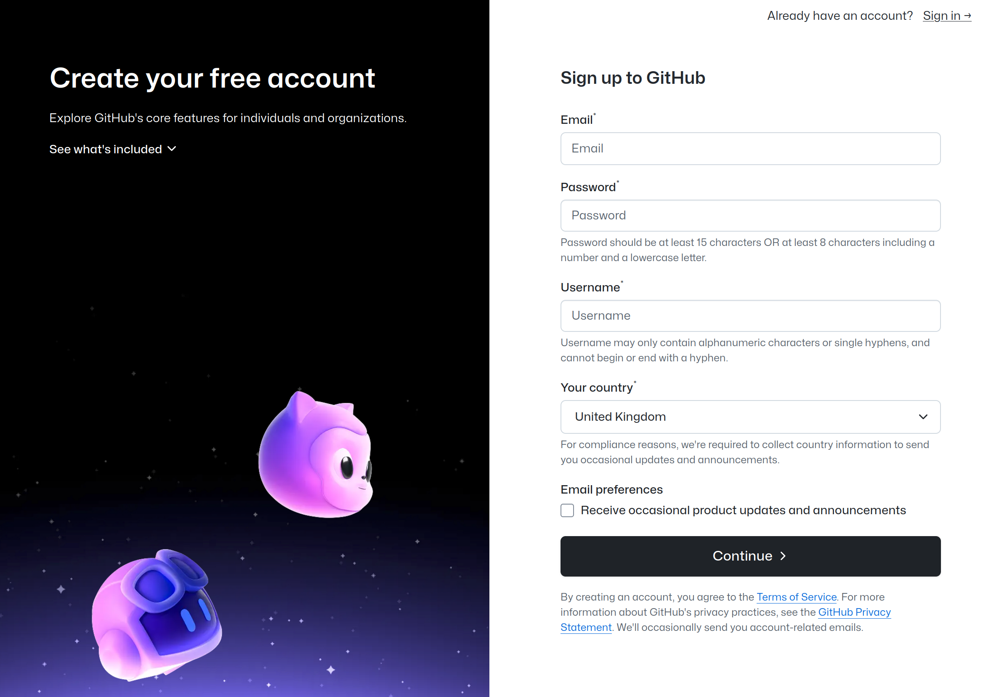
2. Create a new repository. Click the “+” button in the top right corner, and select “New repository”.
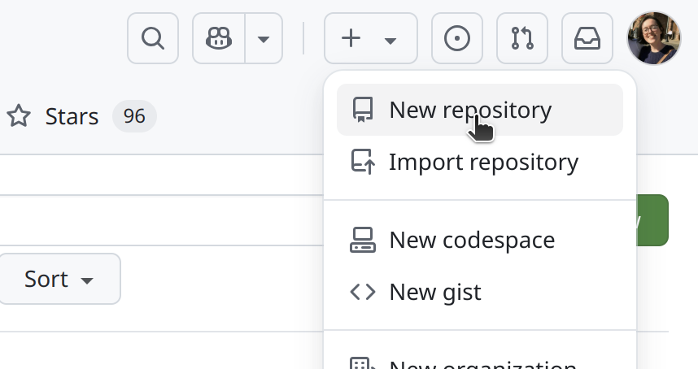
Then fill out the form to create a repository…
Repository name: e.g. emergency-des
Description: e.g. Discrete-event simulation of a hospital emergency department.
Visibility: Choose whether to make the repository public (anyone can see it) or private (only visible to you and people your invite).
README: Select “Add a README file”, which will create a blank README we can populate later (see the documentation page).
.gitignore: Select the “Python” or “R” .gitignore template. This will create a
.gitignorefile in your repository that tells Git which files not to track.Licence: Select an appropriate licence for your repository (see the licensing page for more information and advice).
We would encourage you to make your work open access - i.e. creating a public GitHub repository, and using a permissive open licence (e.g. MIT). As described by The Turing Way, benefits to making your work open include:
- Sharing: Easy to reference and share in papers and presentations.
- Transparency: Clearly shows how you conducted your analyses.
- Reproducibility: Others can verify and reproduce your results.
- Quality: Knowing it’s public encourages good practice.
- Reuse and learning: Others can learn from and build on your work, reducing research waste.
- Extends impact: Your work can continue to have impact after the project ends. This could include for you, if you change jobs, and want to be able to look back on old code!
- Collaboration: Creates opportunities for collaboration, if others come across your code and are interested in working together.
- Funder requirements: For research projects, some grants now mandate open code.
Including a license and citation instructions enables others to use your code while giving you credit.
That said, it’s your code and your choice - if you have specific concerns or proprietary work, a private repository is always an option.
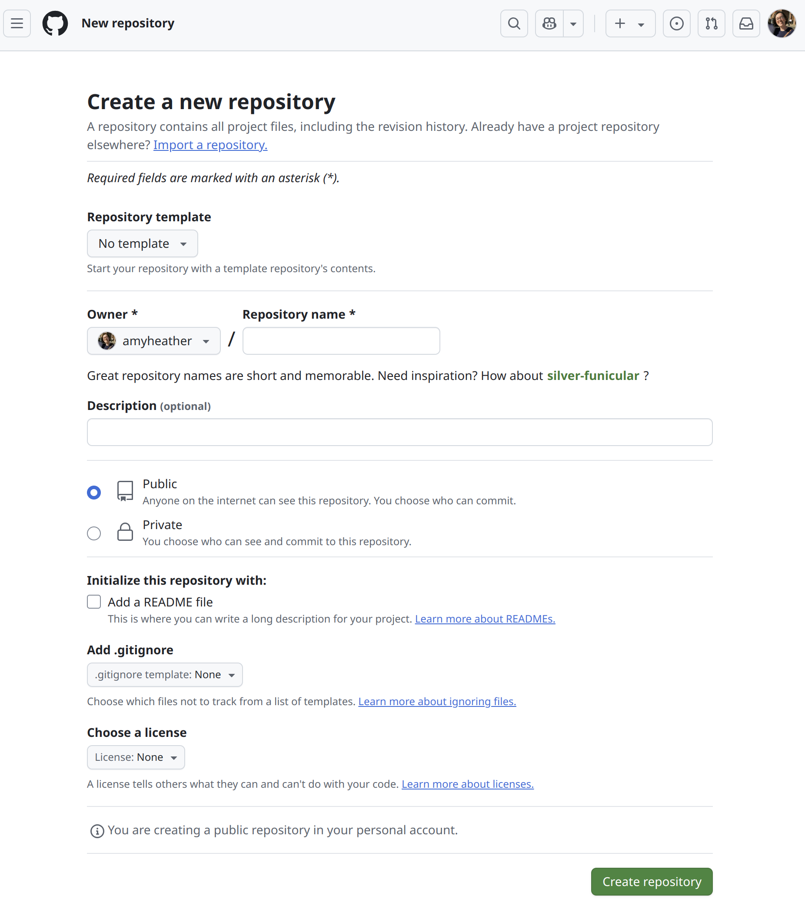
Cloning the repository
You have created a remote repository on GitHub - we now want to clone it, which means we create a local copy on your computer, and can sync between the local and remote repositories.
1. Get the URL. On the main page of you repository, click the green “<> Code” button, then copy the HTTPS url.
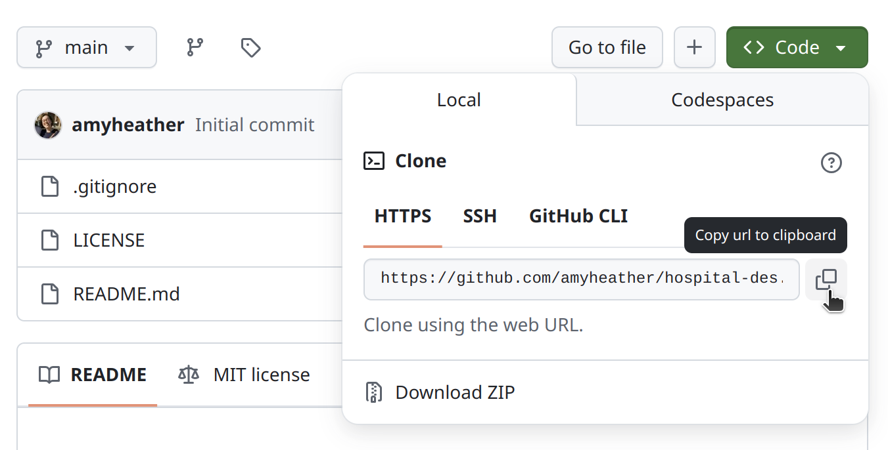
2. Clone the repository. Depending on your operating system, open either the terminal (Linux or Mac) or Git Bash (windows). Navigate to the location where you would like to create the folder containing your repository. Then enter git clone and the pasted URL - for example:
git clone https://github.com/amyheather/hospital-des.git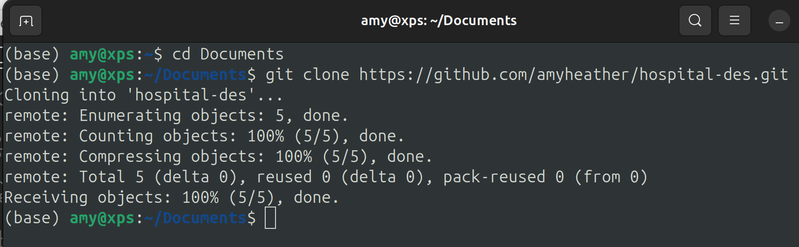
This will have created a local copy of the repository, which you can open with your preferred development environment (e.g. VSCode, RStudio).
Creating a branch and pushing changes
It is best practice to work in branches. A branch is like a separate workspace where you can safely experiment with changes without affecting the main project.
As in the diagram below, you can make several commits in this branch, and when you’re ready, merge back into the main project (e.g. when new feature complete, or reached a stable point where everything is working properly).
This is valuable even when you’re the only person working on the repository - but with multiple collaborator, becomes essential! Every person should work on their own branch.
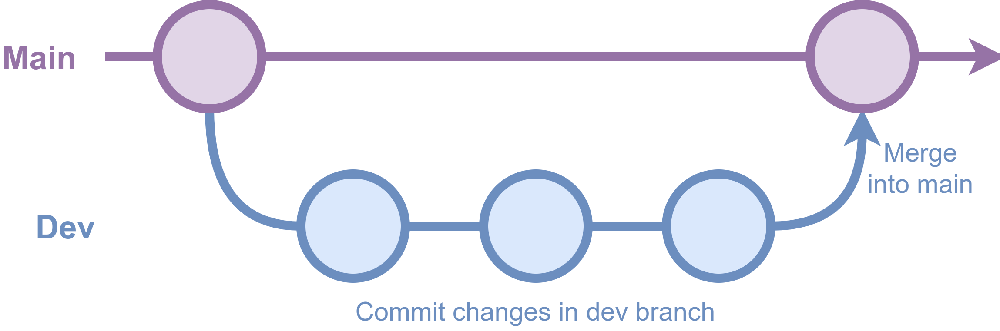
To work in a branch and push changes…
1. Create a branch. Open your terminal or Git Bash, and make sure your current working directory is your Git repository. To create a new branch (here, named dev), then run:
git branch devTo move into this branch:
git checkout devYou should see a message “Switched to branch ‘dev’”.
We can add this branch to the remote GitHub repository by running:
git push -u origin dev2. Make some changes. This could be any changes to code, documentation or other artefacts in the repository. So we can test this out, let’s make a simple change to our README -
Before:
# hospital-des
Discrete-event simulation of a hospital emergency department.After:
# Hospital DES
Discrete-event simulation of a hospital emergency department.
Author: Amy Heather
Work in progress!3. Commit the changes. To save this new version of our file to Git, we need to commit the changes. We use git add to choose which files to commit. We then write a descriptive commit message using git commit. Finally, we push the changes using git push.
git add README.md
git commit -m "docs(README): add author + work-in-progress notice"
git push4. Merge the changes. One of the easiest ways to merge changes into main is using the GitHub website. Open your repository. You should see that you now have “2 Branches”. Navigate to your new branch…
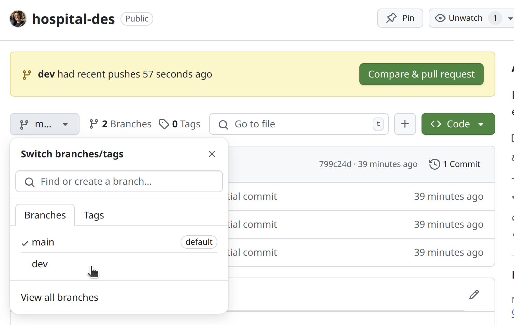
We can see this is now 1 commit ahead of main. We can browse the files in this branch, and can click on the right hand “2 Commits” to view the version history.
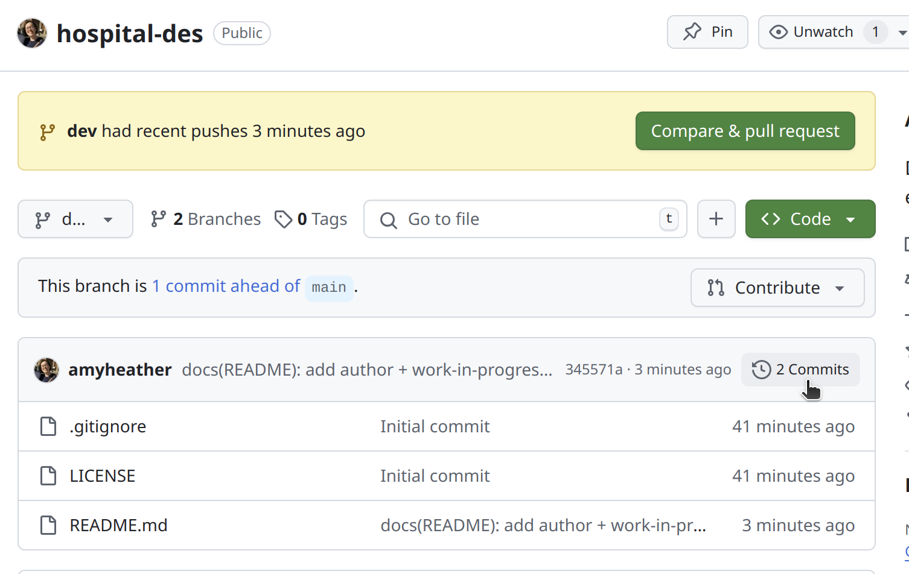
This just has 2 commits - the creation of our repository, and the change to our README file:
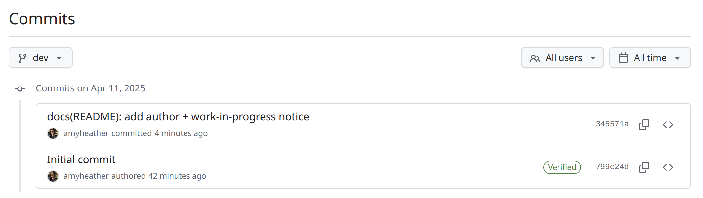
To merge the changes with main, go back to the page for that branch, and select either:
- “This branch is 1 commit ahead of main”, or
- “Compare & pull request”
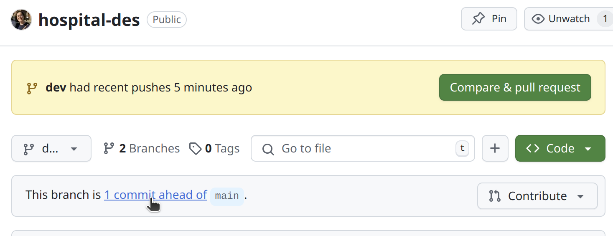
This will open a page which shows all the new commits in your branch, and side-by-side changes the files you have modified.
Click the green “Create pull request” button.
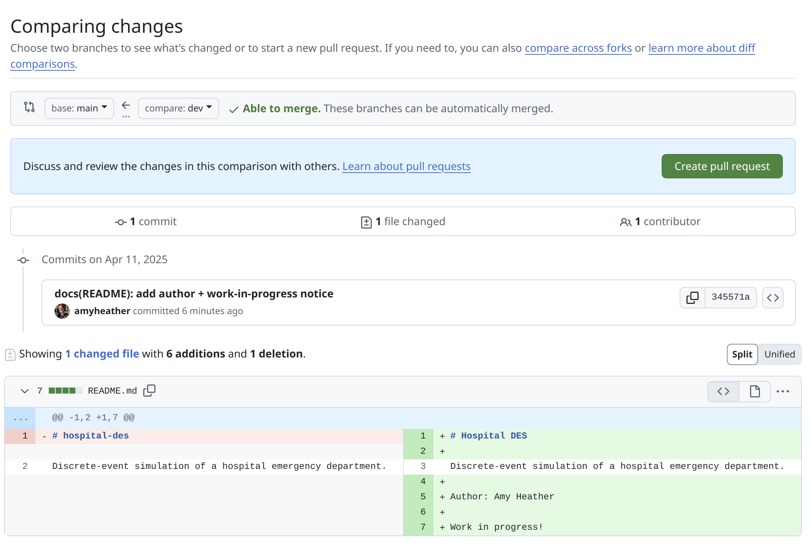
A pull request is a request to merge changes from one branch to another. This provides an opportunity, for example, for others to review the changes and make sure they are happy before these are merged.
We can modify the message - or just leave as is, and select the “Create pull request” button.
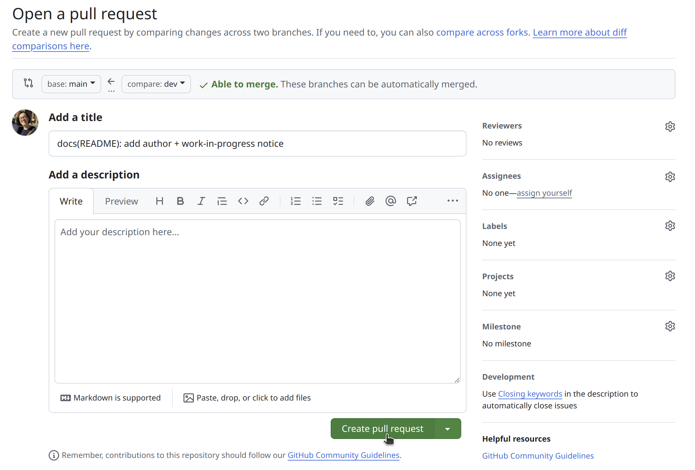
If new changes have been made to the main branch since you created your branch (e.g., new commits, merges from other branches, or contributions from other collaborators) and you’ve modified the same files, you may encounter merge conflicts that need to be resolved.
If not though, you can just select “Merge pull request” and then “Confirm merge”.
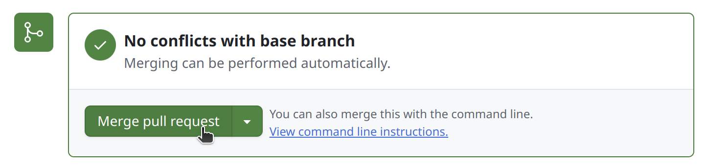
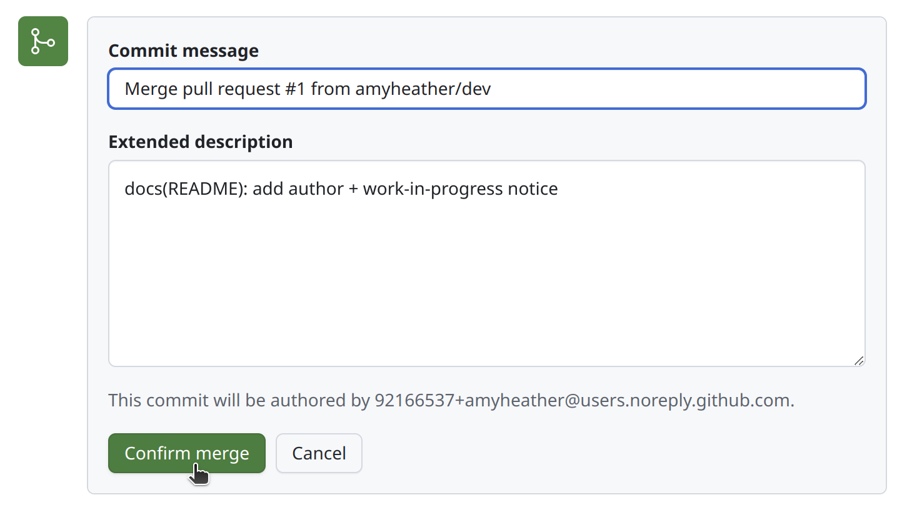
5. Close your branch. We can now delete the branch-
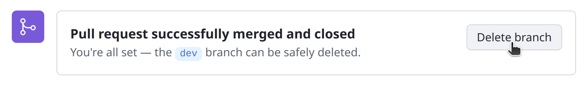
On our local machine, switch back to main:
git checkout mainThen pull the updated main branch, which contains our merged changes:
git pullWe can then delete our local branch:
git branch -d devAnd also get the latest list of branches from the remote repository, with our old branch now removed:
git remote prune originTo continue working in the repository, simply create a new branch and continue as above.
GitHub organisations
When creating a GitHub repository, by default, it will set the owner to be your personal user account. While this works well for person projects, you will often find it better to create repositories within a GitHub organisation instead.
A GitHub organisation acts like a shared account which multiple people can own, access and collaborate on. Advantages of this are:
- One place for each project/team. Related repositories are grouped into one organisation. For example, you could have different organisations for different teams or projects, with all the relevant repositories for each.
- Shared ownership. Multiple people can have administrative access.
- Continuity. If you leave a project, repositories remain accessible to and owned by the team.
- Professional branding. Repositories appear under the organisation name rather than your personal username.
To create a GitHub organisation…
1. Open settings. In the top-right corner, select your profile photo, then click “Settings”.
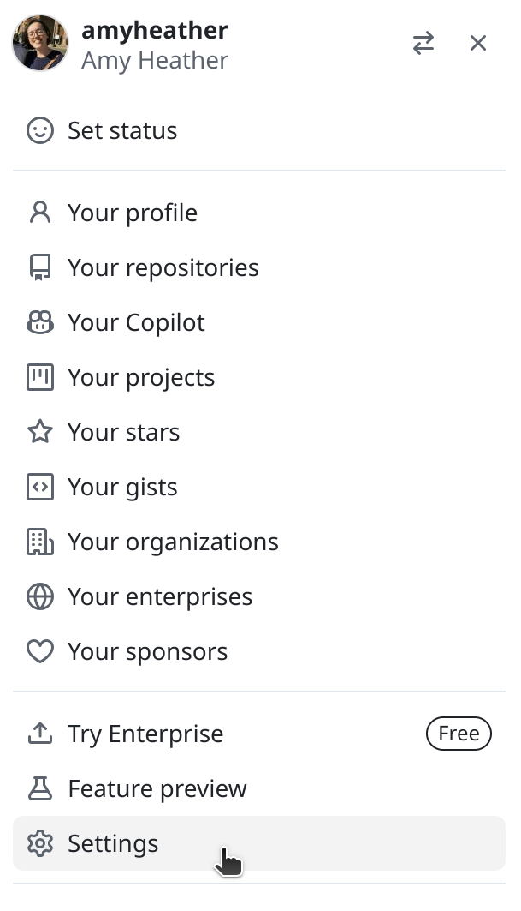
Then select “Organizations” under the Access section in the sidebar.
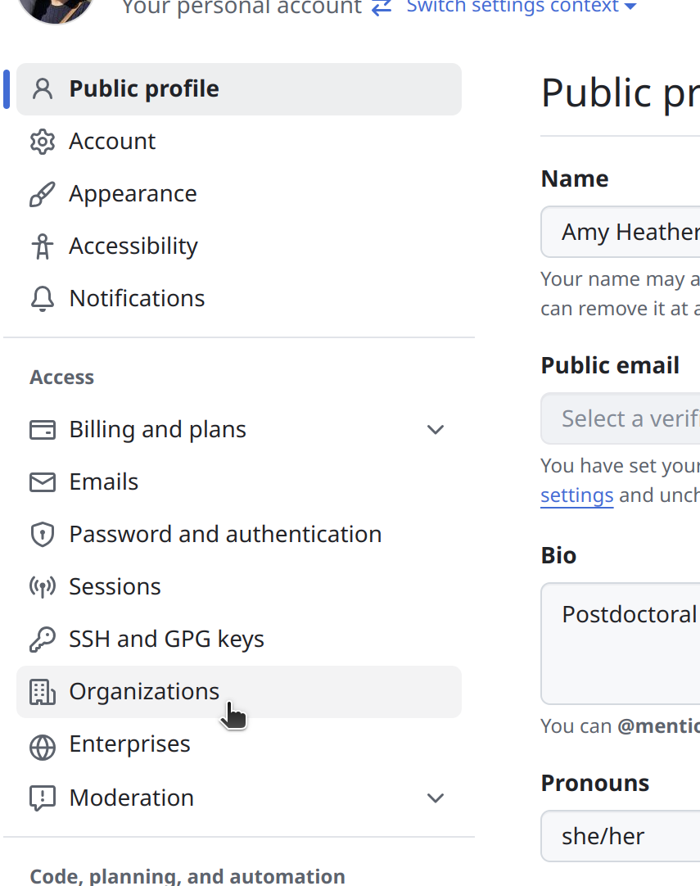
2. Make new organisation. In the top-right corner, select “New organization”.
3. Choose a plan. For example, simply select the Free plan.
4. Enter your organisation details. It will ask for a name and contact email. You can typically then select that the organisation belongs to your personal account. Follow the prompts to create the organisation. You can then add other GitHub users as owners or collaborators.
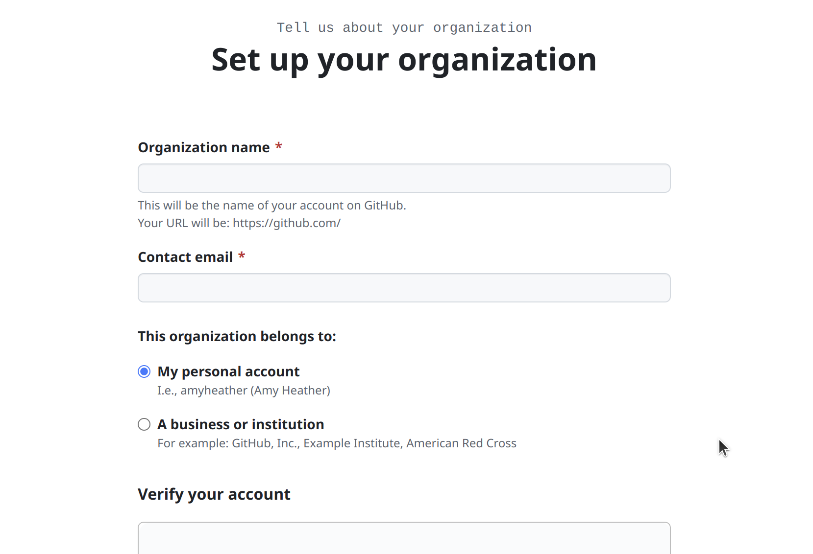